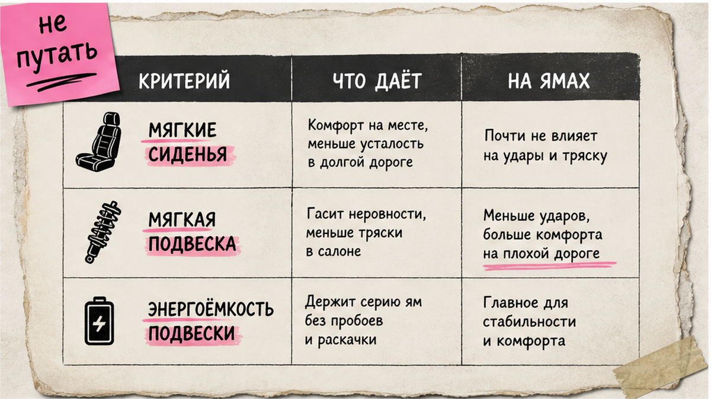
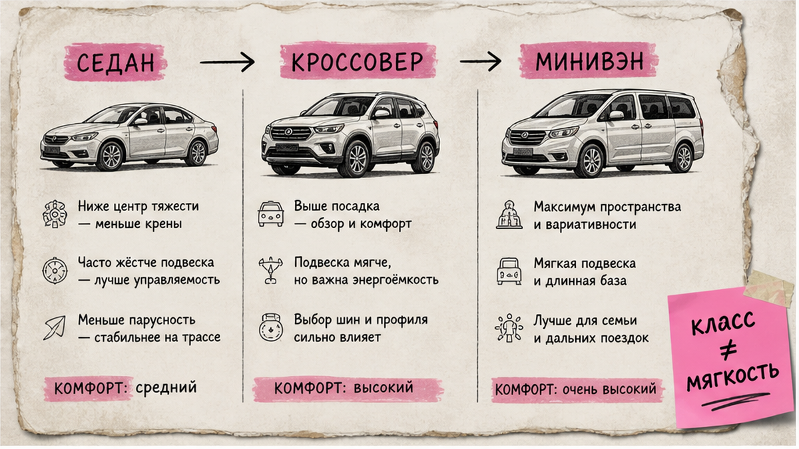

Хочется найти самые комфортные автомобили, а на ямах спина считает каждый стык асфальта. В 2026 комфорт – это не только мягкие кресла: смотрите энергоёмкость подвески, профиль шин и тип задней оси. Ниже – пошаговый выбор авто с мягкой подвеской под заказ из Японии, Кореи и Китая: критерии, сравнение рынков и чеклист до оплаты, без пустых топ-10 ради кликов.
TL;DR / Быстрый инсайт: Мягкая подвеска – умение глотать удары без пробоя, а не ярлык "премиум". На российских дорогах важнее энергоёмкость и независимая задняя многорычажка, чем спорт-пакет и низкий профиль. Зафиксируйте сценарий поездок, тип подвески и рынок (JP / KR / CN), соберите shortlist из 2–3 моделей и проверьте ходовую до оплаты.
Запрос "мягкая подвеска" в России ищут тысячи раз в месяц: людям нужен спокойный ход, а не гоночный руль. При заказе из Азии ошибка дорого стоит – после доставки жёсткую комплектацию "переиграть" сложнее. Мы в Авто-Сейлс разбираем комфорт как практику. Форм на странице нет – подбор идёт в каталоге и в переписке.

На пальцах: подвеска – "подушка" между кузовом и дорогой. Пружины и амортизаторы принимают удар. Энергоёмкость – запас этой подушки: авто может быть мягким на мелкой ряби и жёстко "добивать" на глубокой яме, если хода мало.
Не путайте три разные вещи:
Делать: формулируйте задачу так – "нужен комфорт на стыках и грунтовке без постоянных пробоев". Не делать: выбирать только по фото салона и слову "комфорт" в объявлении.
До оплаты тест-драйва "здесь и сейчас" обычно нет. Работайте по цепочке фактов.
Схема проверки до заказа:
Сценарий поездок → Тип подвески и задняя ось → Диски / профиль шин → Видео и осмотр → Shortlist 2–3 модели → Каталог или Telegram
Пружинная подвеска – массовый сегмент, проще в сервисе. Пневмо и адаптив чаще мягче, но ремонт в РФ обычно дороже. Гидропневматика редка и не должна быть единственной целью поиска.
Делать: просите конкретику ("задняя многорычажка?", "какой R на дисках?"). Не делать: верить фразам "едет как облако" без типа подвески и фото ходовой.

Класс кузова не гарантирует мягкость, но задаёт типичный характер.
| Класс | Что обычно даёт по комфорту | На что смотреть | Кому подходит |
|---|---|---|---|
| Седан | Плавность на трассе, меньше кренов | Клиренс, профиль шин, состояние рычагов | Город и трасса без частого грунта |
| Кроссовер | Запас хода и клиренс ~190–210+ мм | Независимая задняя ось, энергоёмкость | Смешанные дороги, семья, плохой асфальт |
| Минивэн | Мягкая настройка под пассажиров | Крены в поворотах, износ задней подвески | Дальние поездки, много пассажиров |
Для комфортного кроссовера на плохих дорогах важнее независимая задняя многорычажка и клиренс около 200 мм, чем бейдж SUV. Ориентир: у Geely Monjaro заявляют клиренс 210 мм и независимую заднюю многорычажку; у семейства RAV4 в обзорах рынка часто около 195–200 мм – другой баланс, не "хуже/лучше".
Делать: при убитых дорогах начинайте shortlist с кроссоверов/минивэнов с независимой задней осью. Не делать: брать "псевдокроссовер" на жёсткой балке сзади только ради клиренса на бумаге.
Рынок влияет на руль, возраст парка и типичные комфортные модели.
| Критерий | Япония | Корея | Китай |
|---|---|---|---|
| Комфорт-фокус | Кроссоверы и минивэны (RAV4, Harrier, Prado, Noah/Alphard) | Семейные SUV (Tucson, Santa Fe, Sorento), левый руль | Новые кроссоверы Haval / Geely / Changan |
| Руль | Часто правый | Левый | Левый |
| Проверить отдельно | Аукционный лист, история ходовой | Пробеги, отчёты сервисов, комплектация подвески | Ход на РФ-дорогах, сервис запчастей |
| Для кого | Готовы к правому рулю и сильному комфорт-сегменту | Нужен левый руль и понятный семейный SUV | Смотрите свежий кроссовер и оснащение |
Итоговый вердикт: Нужен левый руль и семейный SUV – начните с Кореи. Важны минивэн/кроссовер и спокойны к правому рулю – смотрите Японию. Нужен свежий кроссовер с независимыми подвесками и высоким клиренсом – добавьте Китай и проверяйте ход на видео, а не только буклет.
Отзывы – сигнал, не приговор. По Highlander на Drom отмечают мягкую пружинную подвеску и умение глотать кочки даже на крупных дисках – при заметных кренах. Мягче ход – больше наклоны в поворотах.
Варианты под ваш сценарий – в каталоге Авто-Сейлс: подбор из Японии, Кореи и Китая без форм на этой странице.
Делать: сначала страна под руль и тип кузова, потом модель. Не делать: мешать в shortlist правый минивэн и левый спорт-кроссовер "просто потому что красиво".
Делать: в ТЗ к подбору пишите "без спорт-подвески, без занижения, приоритет энергоёмкости". Не делать: соглашаться на "красивые 20+" диски, если цель – мягкий ход.
Нужен разбор комплектации – напишите в Telegram Авто-Сейлс. Офис во Владивостоке (Днепровская 40а, стр. 4) – хаб логистики: СВХ, таможня и выдача по России, без форм на блоге.
Так вы выбираете не "топ из интернета", а машину, которая мягче переносит российский асфальт в 2026 году.
Материал проверен: редакция Авто-Сейлс (эксперты по авто под заказ из Японии, Кореи и Китая).
Достоверность данных: фразы спроса ("мягкая подвеска", "самые комфортные автомобили", "комфортный кроссовер") сверены по Яндекс Вордстат на июль 2026; ориентиры по подвескам и спецификациям – из открытых обзоров и дилерских материалов (см. research-notes).
Спросите тип передней и задней подвески, размер дисков и профиль шин, запросите видео хода по неровностям. Смотрите энергоёмкость и состояние амортизаторов. Фразы "очень комфортная" без этих данных не используйте как критерий.
Для трассы чаще выигрывают седаны и длиннобазные минивэны. Для города с ямами – кроссовер с независимой задней осью и нормальным профилем шин. Сначала зафиксируйте долю грунта и разбитого асфальта, потом выбирайте класс.
Если приоритет – мягкая подвеска, спорт-пакет обычно мешает: жёстче стойки и меньше ход. Для смешанных дорог лучше комфортные настройки и аккуратный размер дисков. Острый руль и "облачный" ход редко живут в одной комплектации.
Нужны оба контура. Клиренс снижает риск ударов днищем, энергоёмкость защищает от пробоев. Берите связку: достаточный клиренс + независимая задняя ось + адекватный профиль шин.
Часто да по плавности, но не всегда по владению в РФ: обслуживание дороже и дольше. Если нет понятного сервиса рядом, надёжная пружинная энергоёмкая схема может быть практичнее.
Опишите сценарий, запреты и предпочтение руля. Соберите shortlist из 2–3 моделей и перейдите в каталог или Telegram Авто-Сейлс за подбором через Владивосток. Не оплачивайте до ответов по ходовой.